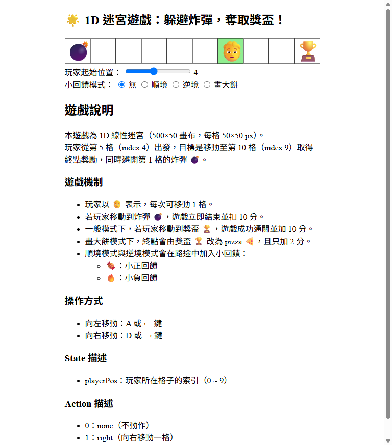
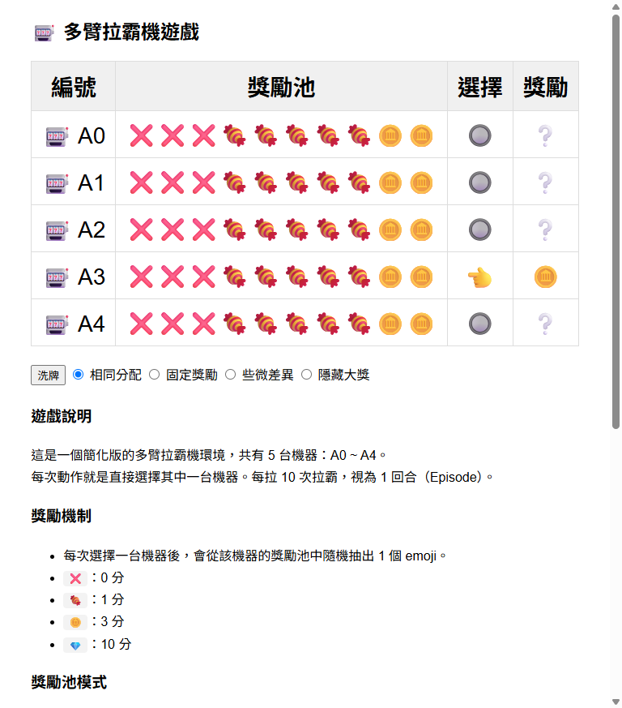
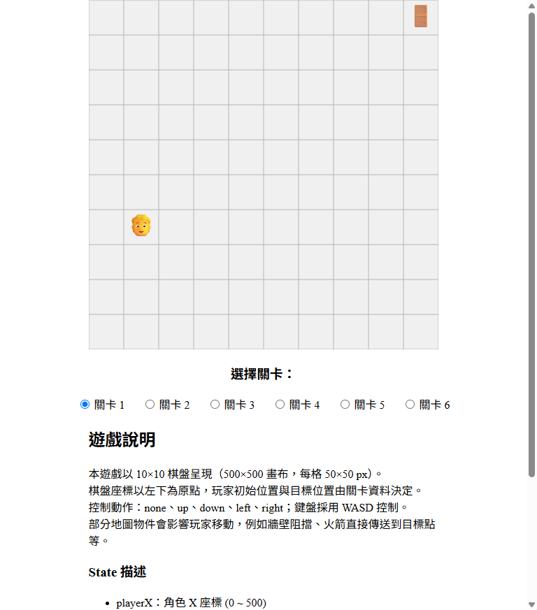
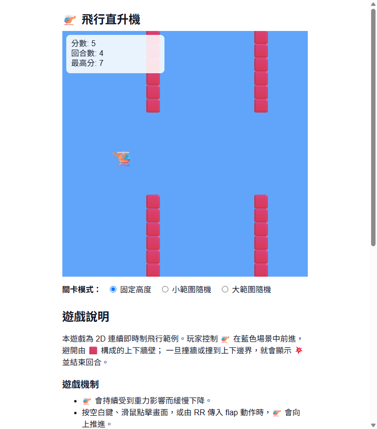
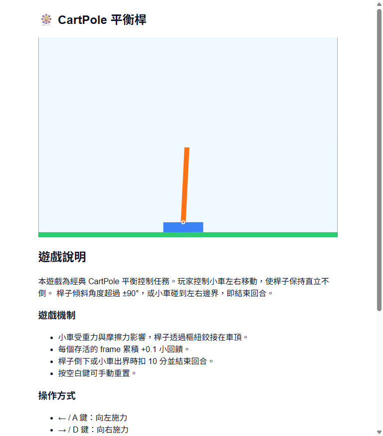

強化學習的學習曲線本來就陡。如果又選了一個對初學者來說太難的環境，Agent 要跑幾千個回合才能看到一點收斂的跡象——這會讓學生誤以為自己哪裡設錯了，或覺得 RL 根本沒有效果。
相反地，選對環境，幾十個回合就能看到 Q-Table 從一片空白到出現明顯的學習軌跡，這種「眼見為憑」的成就感，才是讓學生真正理解 RL 的關鍵時刻。
| 環境 | 狀態類型 | 狀態維度 | 動作數 | 收斂速度 | 視覺化可讀性 | 推薦情境 |
|---|---|---|---|---|---|---|
| Maze1D | 離散 | 1D | 2 | 極快（<100 回合） | 中 | RL 入門、第一次體驗 |
| MAB | 無狀態 | — | 可調 | 極快 | 低 | 理解探索/利用取捨 |
| Maze2D | 離散 | 2D | 4 | 快（100–500 回合） | 極高（熱力圖） | 教學示範、展示 Q-Table |
| heli | 連續（離散化） | 3D | 2 | 慢（500+ 回合） | 中 | 連續決策、即時制挑戰 |
| CartPole | 連續（離散化） | 4D | 2 | 很慢（需 DQN） | 中 | 高維狀態、DQN 驗證 |

一維迷宮是 RR 平台最簡單的環境。Agent 在一條直線上左右移動，目標是找到終點。狀態只有一個整數（位置），Q-Table 非常小，幾十個回合就能看到完整的學習過程。
如果你是第一次接觸強化學習，或者你的學生從來沒看過 RL 在跑，從 Maze1D 開始。它的速度夠快，讓你可以在課堂上即時示範「從不會到會」的完整訓練過程。

多臂拉霸機（Multi-Armed Bandit）是一個沒有狀態轉移的問題。Agent 只需要決定每次要拉哪個臂，沒有「上一步的後果影響下一步」的概念。這讓它成為理解探索/利用取捨最純粹的場景：你可以清楚看到當 ε 很低時，Agent 很快鎖定某個臂但可能錯過更好的選擇；當 ε 很高時，它不斷嘗試但也遲遲無法穩定。
MAB 支援多種獎勵模式，適合設計對照實驗。

二維迷宮是 RR 平台視覺化效果最佳的環境。Agent 在一個二維格子地圖上移動，Q-Table 熱力圖可以直接顯示每一格的「價值」——學得越久，熱力圖的顏色分布就越清楚地指向正確路徑。這個視覺化對於讓學生「看見」Q-Learning 的學習過程非常有效。
Maze2D 提供 6 個難度等級，從最簡單的開放地圖到有障礙物的複雜迷宮，可以根據課程需求調整挑戰程度。如果你只能選一個環境做教學示範，選 Maze2D。

直升機環境是即時制的，Agent 需要持續決定向上還是向下，避開障礙物。狀態是 3D 的，包含直升機位置、速度與距離資訊。這個環境的挑戰在於每一秒都在做決定，訓練需要更多回合才能收斂。
heli 適合已經理解基本 RL 流程之後，想進一步挑戰連續決策場景的學習者。

平衡桿是強化學習的經典 benchmark。Agent 需要控制一台小車左右移動，讓桿子保持直立。狀態是 4D 的連續值（小車位置、速度、桿子角度、角速度），用 Q-Table 離散化後有 1296 格以上，純 Q-Learning 的收斂速度很慢。
CartPole 最適合用來驗證 DQN 的效果——先用 Q-Table 跑，看到收斂困難之後切換 DQN，對比兩者的訓練曲線。這個對比本身就是很好的教學材料。